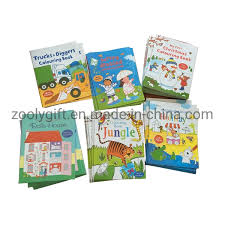

by Jack
Tales and stories for children.
Tales and stories for children..
This book tells the memoirs of Mickey, a Fox Terrier who initially tells us about the family he lives with; describing Zina, her mother, her father, the cook, and the doorman. In the process, it becomes clear how he does not like many of the conditions and conversations of people. Mickey tells us about the bitterness he feels when people make fun of him, look down on him for what they have and he does not have, and prefer cats to him in terms of food and care. He talks about his talents in writing and poetry and his knowledge of many things. He describes his suffering once when he lost his way and spent a whole day in the house of a girl other than his owner, and flirts with the sea and its beach, and tells about his experience in the circus, on board the ship, and in the zoo, and marvels at the difference in seasons, and wonders about the importance of that,